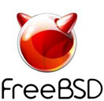

gpart — пример работы с дисками
Автор: setevoy | 01/02/2013
|
Несколько слов о такой замечательной утилите как gpart. Утилита предназначена для работы с дисками и разделами на нём. На самом деле, утилита gpart является жесткой ссылкой на утилиту geom. Основная задача утилиты — заменить собой такие устаревшие морально программы для работы с дисками, как bsdlabel и fdisk (хотя они по-прежнему включены в дистрибутив и есть в портах).
И так, имеются 2 жестких диска:
# camcontrol devlist
<VMware Virtual IDE Hard Drive 00000001> at scbus0 target 0 lun 0 (pass0,ada0)
<VMware Virtual IDE Hard Drive 00000001> at scbus0 target 1 lun 0 (pass1,ada1)
На ada0 установлена сама система, его мы трогать не будем. Нас интересует второй диск — ada1:
# ls -l /dev/ad*
lrwxr-xr-x 1 root wheel 4 Dec 28 17:42 /dev/ad0 -> ada0
lrwxr-xr-x 1 root wheel 6 Dec 28 17:42 /dev/ad0p1 -> ada0p1
lrwxr-xr-x 1 root wheel 6 Dec 28 17:42 /dev/ad0p2 -> ada0p2
lrwxr-xr-x 1 root wheel 6 Dec 28 17:42 /dev/ad0p3 -> ada0p3
lrwxr-xr-x 1 root wheel 4 Dec 28 17:42 /dev/ad1 -> ada1
crw-r—— 1 root operator 0, 90 Dec 28 17:42 /dev/ada0
crw-r—— 1 root operator 0, 92 Dec 28 17:42 /dev/ada0p1
crw-r—— 1 root operator 0, 94 Dec 28 19:42 /dev/ada0p2
crw-r—— 1 root operator 0, 96 Dec 28 17:42 /dev/ada0p3
crw-r—— 1 root operator 0, 98 Dec 28 17:42 /dev/ada1
Второй диск необходимо разбить аналогично первому. Проверим, что нам скажет gpart о первом диске:
# gpart show
=> 34 16777149 ada0 GPT (8.0G)
34 128 1 freebsd-boot (64k)
162 15935360 2 freebsd-ufs (7.6G)
15935522 837632 3 freebsd-swap (409M)
16773154 4029 — free — (2M)
Первый столбец показывает первый блок раздела. Второй — кол-во блоков в этом разделе. Третий — имя раздела. В четвертой колонке указывается тип файловой системы, и в последнем — размер раздела.
На втором диске в настоящий момент нет ничего:
# gpart show ada1
gpart: No such geom: ada1.
Полезная фича утилиты gpart — это «отложенное» внесение любых изменений. Т.е., если добавить ключи -fx — то изменения на диск не будут записываться сразу, а только после того, как вы дадите команду:
# gpart commit
Либо, если решите отменить все изменения — то:
# gpart undo
Создаём новую разметку диска, со схемой GPT (про MBR мы потихоньку забываем):
# gpart create -s GPT /dev/ada1
ada1 created
Теперь — посмотрим на диск:
# gpart show ada1
=> 34 16777149 ada1 GPT (8.0G)
34 16777149 — free — (8G)
Если необходимо удалить схему — выполняем:
# gpart destroy ada1
ada1 destroyed
Смотрим:
# gpart show -p ada1
gpart: No such geom: ada1.
Размер и смещение начала раздела по-умолчанию задаются в блоках, размер которых обычно соответствует размеру физического сектора, т.е. 512 byte. Для того чтобы не вычислять количество блоков, эти параметры можно указывать с суффиксом размера: B, K, M, G, T, P, E — т.е. от байт до экзабайт. Но лучше указывать размер в секторах, иначе размер может быть вычислен неверно.
Размер раздела указывается после опции -s, а смещение начала — после -b. Если не указывать эти параметры — они будут выбраны автоматически: смещение начала — на первый доступный блок, размер — на максимально возможный из доступного свободного пространства.
Вычисление индекса партиции обычно можно оставить утилите gpart. Если вам нужна какая-нибудь особенная конфигурация, например, чтобы система устанавливалась на ada0p3 — нужно указать параметр -i 3.
Теперь, создадим загрузочный раздел, как на диске ada0:
# gpart add -b 34 -s 128 -t freebsd-boot /dev/ada1
ada1p1 added
Смотрим:
# gpart show -p ada1
=> 34 16777149 ada1 GPT (8.0G)
34 128 ada1p1 freebsd-boot (64k)
162 16777021 — free — (8G)
Далее, создаём раздел размером 7.6G или 15935360 блоков по 512 bytes.
Посчитаем:
; 15935360 * 512
8158904320
; 8158904320 / 1024
7967680
Итого, получится раздел размером 7967680 КБ, или 7.9G. Фактически, gpart покажет 7.6 G, т.к. около 5% резервируется самой файловой системой.
Укажем:
-b 162 — первый сектор, с которого будет начинаться раздел;
-s 15935360 — кол-во блоков раздела, так же можно указать так 7.9G;
-t freebsd-ufs — тип файловой системы, так же можно указывать freebsd-swap, freebsd-boot и другие, подробнее — как обычно, в man gpart.
Выполняем:
# gpart add -b 162 -s 15935360 -t freebsd-ufs /dev/ada1
ada1p2 added
Проверим:
# gpart show ada1
=> 34 16777149 ada1 GPT (8.0G)
34 128 1 freebsd-boot (64k)
162 15935360 2 freebsd-ufs (7.6G)
15935522 841661 — free — (411M)
И последний раздел — для раздела подкачки:
# gpart add -b 15935522 -t freebsd-swap /dev/ada1
ada1p3 added
Тут мы не указываем ключ -s — gpart автоматически займёт все оставшееся место на диске.
Смотрим:
# gpart show ada1
=> 34 16777149 ada1 GPT (8.0G)
34 128 1 freebsd-boot (64k)
162 15935360 2 freebsd-ufs (7.6G)
15935522 841661 3 freebsd-swap (411M)
Сравним со старым диском:
# gpart show ada0
=> 34 16777149 ada0 GPT (8.0G)
34 128 1 freebsd-boot (64k)
162 15935360 2 freebsd-ufs (7.6G)
15935522 837632 3 freebsd-swap (409M)
16773154 4029 — free — (2M)
Или — просто запустить gpart show без ключей:
# gpart show
=> 34 16777149 ada0 GPT (8.0G)
34 128 1 freebsd-boot (64k)
162 15935360 2 freebsd-ufs (7.6G)
15935522 837632 3 freebsd-swap (409M)
16773154 4029 — free — (2M)
=> 34 16777149 ada1 GPT (8.0G)
34 128 1 freebsd-boot (64k)
162 15935360 2 freebsd-ufs (7.6G)
15935522 841661 3 freebsd-swap (411M)
Удаление разделов производится так же легко. Например, мы хотим удалить раздел swap и пересоздать его заново.
Раздел freebsd-swap имеет метку 3. Выполняем:
# gpart delete -i 3 /dev/ada1
ada1p3 deleted
Смотрим:
# gpart show ada1
=> 34 16777149 ada1 GPT (8.0G)
34 128 1 freebsd-boot (64k)
162 15935360 2 freebsd-ufs (7.6G)
15935522 841661 — free — (411M)
И теперь — пересоздадим swap-раздел, сделав его абсолютно аналогичным разделу на первом диске, т.е. укажем начальный блок и размер раздела в блоках:
# gpart add -b 15935522 -s 837632 -t freebsd-swap /dev/ada1
ada1p3 added
Сравним ещё раз:
# gpart show
=> 34 16777149 ada0 GPT (8.0G)
34 128 1 freebsd-boot (64k)
162 15935360 2 freebsd-ufs (7.6G)
15935522 837632 3 freebsd-swap (409M)
16773154 4029 — free — (2M)
=> 34 16777149 ada1 GPT (8.0G)
34 128 1 freebsd-boot (64k)
162 15935360 2 freebsd-ufs (7.6G)
15935522 837632 3 freebsd-swap (409M)
16773154 4029 — free — (2M)
Создадим файловую систему, если требуется:
# newfs /dev/ada1p2
/dev/ada1p2: 7780.9MB (15935360 sectors) block size 32768, fragment size 4096
super-block backups (for fsck -b #) at:
192, 1515712, 3031232, 4546752, 6062272, 7577792, 9093312, 10608832, 12124352, 13639872, 15155392
Посмотрим:
# file -s /dev/ada1p2
/dev/ada1p2: Unix Fast File system [v2] (little-endian) last mounted on , last written at Fri Dec 28 19:32:25 2012, clean flag 1, readonly flag 0, number of blocks 1991920, number of data blocks 1959159, number of cylinder groups 11, block size 32768, fragment size 4096, average file size 16384, average number of files in dir 64, pending blocks to free 0, pending inodes to free 0, system-wide uuid 0, minimum percentage of free blocks 8, TIME optimization
Если хотите использовать Soft Updates для этой файловой системы — добавьте ключ -U:
# newfs -U /dev/ada1p2
/dev/ada1p2: 7780.9MB (15935360 sectors) block size 32768, fragment size 4096
super-block backups (for fsck -b #) at:
192, 1515712, 3031232, 4546752, 6062272, 7577792, 9093312, 10608832, 12124352, 13639872, 15155392
Примонтируем новый раздел:
# mount /dev/ada1p2 /mnt/
Посмотрим на него:
# cd /mnt/
# ls
.snap
Материалы по теме:
http://advprog.ru
http://wiki.lissyara.su
http://mechanoid.kiev.ua
http://www.unix.ck.ua
http://f-andrey.blogspot.com
http://freebsd.3dn.ru
https://sites.google.com
http://bu7cher.blogspot.com